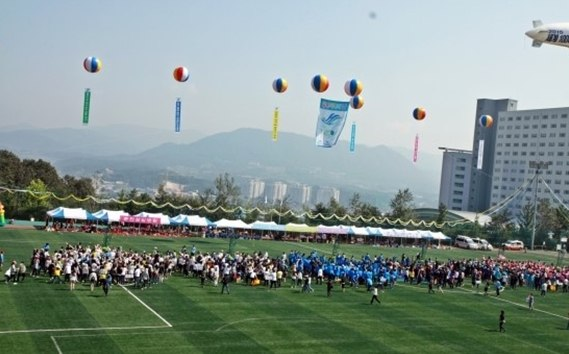

정시 반영비율은 대학 소개서에 적힌 표가 아니라 남은 기간의 시간표입니다. 이 글은 한림대학교 전형을 소개하는 글이 아니라, 반영 구조를 "그래서 어느 과목을 먼저 하느냐"로 바꿔 읽는 글입니다. 한림대학교는 이 부분에서 다른 대학과 구조가 꽤 다릅니다. 고3 수학과외나 국어 수업 시간을 어디에 쓸지 정하기 전에 한 번은 확인해야 하는 표입니다.
| 모집단위 | 반영 방식 |
|---|---|
| 대부분의 모집단위 | 국어·영어·수학 중 최상위 1개 영역 70% + 그 영역을 뺀 국어·영어·수학·탐구 중 최상위 1개 영역 30% |
| 간호학과 | 국어·수학(상위 35% + 하위 25%) + 영어 20% + 탐구 20% |
| 의학과 | 국어 20% + 수학 40% + 영어 10% + 과학탐구 30% |
| 글로벌학부 | 영어 60% + 국어·수학·탐구 중 최상위 1개 영역 40% |
탐구는 두 과목 평균으로 반영합니다. 의학과는 단계별 전형으로, 1단계에서 수능으로 거르고 2단계에서 면접을 합산합니다. 예체능 실기 모집단위는 별도 방식을 씁니다.
대부분의 대학은 국어·수학·영어·탐구 네 영역을 모두 더합니다. 한림대학교의 일반 모집단위는 다릅니다. 최종 점수에 들어가는 영역이 두 개뿐이고, 그중 하나가 전체의 70%를 가져갑니다.
이 말은 두 가지로 읽힙니다. 하나는 약한 과목 두 개는 점수에 들어오지 않는다는 것입니다. 수능 전체 평균이 아니라 잘 본 두 영역만 보기 때문에, 네 과목을 고르게 올리려고 애쓰는 전략은 한림대학교에서는 효율이 낮습니다. 다른 하나는 가장 잘하는 과목 하나의 가치가 다른 대학의 두 배 이상이라는 것입니다. 반영비율 25% 대학에서 한 과목을 5점 올리면 전체는 1.25점 움직이지만, 70%라면 3.5점이 움직입니다.
간호학과는 일반 모집단위와 달리 국어와 수학을 둘 다 봅니다. 둘 중 잘 본 쪽이 35%, 못 본 쪽이 25%로 들어가 합이 60%입니다. 여기에 영어 20%, 탐구 20%. "두 과목만 들어간다"는 전략이 통하지 않고, 네 영역을 다 챙겨야 합니다. 간호학과를 목표로 한다면 국어와 수학 중 약한 쪽을 버릴 수 없습니다.
의학과는 수학이 40%로 가장 무겁고 과학탐구가 30%입니다. 둘을 합치면 70%. 반면 영어는 10%라 등급을 하나 올려도 전체에서 움직이는 폭이 작습니다. 의학과를 준비한다면 수학과 과학탐구에 시간을 몰고, 영어는 떨어지지 않을 만큼만 유지하는 배분이 맞습니다.
글로벌학부는 반대로 영어가 60%입니다. 영어 한 과목이 점수의 절반을 넘으니, 다른 과목 성적이 아쉬워도 영어가 강하면 지원해 볼 만한 자리입니다.
한림대학교는 영어를 원점수나 백분위가 아니라 등급별 반영점수로 환산해 넣습니다. 1등급이 만점이고 9등급이 0점입니다. 등급 사이 간격은 해마다 공개되는 환산표를 확인해야 하는데, 여기서 중요한 것은 간격의 크기보다 영어가 70%든 30%든 들어갈 수 있는 자리에 있다는 사실입니다. 영어를 "최저만 맞추면 되는 과목"으로 두고 손을 놓으면, 한림대학교에서는 70% 자리 후보 하나를 스스로 지우는 셈이 됩니다.
학생 수준에 맞는 선생님을 24시간 안에 추천해 드려요. 상담은 무료입니다.